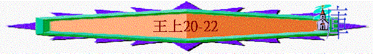

|
屬神國度的衰落 |
|||
|
二王—行神的旨意得堅固
|
二國—不專心順服終分裂
|
二先知—神能力彰顯仍剛硬
|
二結局—繼續行惡至終亡國
|
|
王上1-10 |
王上11-16 |
王上17-王下9:4 |
王下9:5-25:30 |
三.二先知----神能力彰顯仍剛硬(王上17-王下9:4)
1.以利亞先知(17-22)
A.他的能力(17)
B.他的得勝(18)
C.人的軟弱(19)
D.神的恩典(20:1-30)
∼亞哈雖然屢次受到警告仍不悔改，但神仍給他有恩典
a.第一場戰事中得勝
(1)被攻
「亞蘭王便哈達聚集他的全軍，率領三十二個王，帶著車馬上來圍攻撒瑪利亞；又差遣使者進城見以色列王亞哈，對他說：「便哈達如此說：你的金銀都要歸我，你妻子兒女中最美的也要歸我。」」20:1-3
∼便哈達是亞蘭王的稱號，而不是他名字，而三十二個王可能是指一些族長、首領
∼亞蘭王首先派使者到以色列，要求他們投降，並交出金銀及妻子女兒，亞哈王雖應允要求，但亞蘭王貪得無厭，更要搜查他的家和僕人的家，將所愛的拿去。
(2)反抗
「故此，以色列王對便哈達的使者說：「你們告訴我主我王說：王頭一次差遣人向僕人所要的，僕人都依從；但這次所要的，我不能依從。」使者就去回覆便哈達。便哈達又差遣人去見亞哈說：「撒瑪利亞的塵土若夠跟從我的人每人捧一捧的，願神明重重的降罰與我！」以色列王說：「你告訴他說，才頂盔貫甲的，休要像摘盔卸甲的誇口。」便哈達和諸王正在帳幕裡喝酒，聽見這話，就對他臣僕說：「擺隊吧！」他們就擺隊攻城。」20:9-12
∼以色列王不聽從亞蘭王貪得無厭的要求
∼20:10意思是亞蘭人的兵之數量十分龐大，撒瑪利亞的塵土也不夠他們捧一捧，他們也可以將撒瑪利亞移為平地
∼20:11意思是叫他們現在頂盔貫甲，仍是打仗中，也未知嬴輸，不要像打完仗得勝的戰士將裝備放下一樣般誇口
(3)預言
「有一個先知來見以色列王亞哈，說：「耶和華如此說：『這一大群人你看見了嗎？今日我必將他們交在你手裡，你就知道我是耶和華。』」
亞哈說：「藉著誰呢？」他回答說：「耶和華說，藉著跟從省長的少年人。」亞哈說：「要誰率領呢？」他說：「要你親自率領。」」20:13-14
∼神預言藉一少年人省長使他們得勝，要知道神才是耶和華，以色列自有永有的神
(4)得勝
「跟從省長的少年人出城，軍兵跟隨他們；各人遇見敵人就殺。亞蘭人逃跑，以色列人追趕他們；亞蘭王便哈達騎著馬和馬兵一同逃跑。以色列王出城攻打車馬，大大擊殺亞蘭人。」20:19-21
b.第二場戰事中得勝
(1)備戰
「那先知來見以色列王，對他說：「你當自強，留心怎樣防備；因為到明年這時候，亞蘭王必上來攻擊你。」」20:22
(2)不服
「亞蘭王的臣僕對亞蘭王說：「以色列人的神是山神，所以他們勝過我們；但在平原與他們打仗，我們必定得勝。王當這樣行：把諸王革去，派軍長代替他們，」20:23-24
「次年，便哈達果然點齊亞蘭人上亞弗去，要與以色列人打仗。以色列人也點齊軍兵，預備食物，迎著亞蘭人出去，對著他們安營，好像兩小群山羊羔；亞蘭人卻滿了地面。」20:26-27
∼亞蘭那邊仍帶著迷信色彩，認為今次是敗給以色列的山神，所以若在平原爭戰，必得勝利
(3)預言
「有神人來見以色列王，說：「耶和華如此說：『亞蘭人既說我耶和華是山神，不是平原的神，所以我必將這一大群人都交在你手中，你們就知道我是耶和華。』」」20:28
∼神卻藉一神人預言神要顯明祂是全地的神，不單是山神，也是以色列的神，要將亞蘭軍交於以色列人的手中
(4)得勝
「以色列人與亞蘭人相對安營七日，到第七日兩軍交戰；那一日以色列人殺了亞蘭人步兵十萬，其餘的逃入亞弗城；城牆塌倒，壓死剩下的二萬七千人。便哈達也逃入城，藏在嚴密的屋子裡。」20:29-30
E.王的失敗(20:31-21:29)
∼神對亞哈及以色列家有恩典，使他們在仇敵中得勝，但亞哈卻繼續行神眼中看為惡的事情，惹神發怒
a.縱容神的敵人
(1)縱敵
「他的臣僕對他說：「我們聽說以色列王都是仁慈的王，現在我們不如腰束麻布，頭套繩索，出去投降以色列王，或者他存留王的性命。」」20:31
「便哈達對王說：「我父從你父那裡所奪的城邑，我必歸還。你可以在大馬色立街市，像我父在撒瑪利亞所立的一樣。」亞哈說：「我照此立約，放你回去」，就與他立約，放他去了。」20:34
∼亞蘭王攻擊神的選民，也藐視神的能力與地方，認為以色列的神只是山神，他明顯是神的仇敵，是神不喜悅的
∼但當便哈達向王求請，並開放國家的貿易給亞哈王時，亞哈竟縱敵人，讓他離去
(2)受責
(A)先知門徒的行動
(a)不聽從神得惡果
「有先知的一個門徒奉耶和華的命對他的同伴說：「你打我吧！」那人不肯打他。他就對那人說：「你既不聽從耶和華的話，你一離開我，必有獅子咬死你。」那人一離開他，果然遇見獅子，把他咬死了。」20:35-36
∼先知的門徒叫同伴打他，但他不肯打，門徒預言不聽從神話之惡果—被獅子咬死
∼也帶出亞哈不聽從神的指示，從容敵人，也會有惡果
(b)不留情面行主話
「先知的門徒又遇見一個人，對他說：「你打我吧！」那人就打他，將他打傷。」20:37
∼但另一個人則不留情面的打先知的門徒，也成為亞哈的提醒，為何要留情份給敵人，不擊殺亞蘭王
(B)先知門徒的借喻
「他就去了，用頭巾蒙眼，改換面目，在路旁等候王。王從那裡經過，他向王呼叫說：「僕人在陣上的時候，有人帶了一個人來，對我說：『你看守這人，若把他失了，你的性命必代替他的性命；不然，你必交出一他連得銀子來。』僕人正在忙亂之間，那人就不見了。」以色列王對他說：「你自己定妥了，必照樣判斷你。」他急忙除掉蒙眼的頭巾，以色列王就認出他是一個先知。他對王說：「耶和華如此說：『因你將我定要滅絕的人放去，你的命就必代替他的命，你的民也必代替他的民。』」」20:38-42
∼用人不忠心有負所託而要賠賞的例子，引出亞哈王不忠心消滅神的仇敵，而要作出交出自己的民與性命作抵償
(3)不悔
「於是以色列王悶悶不樂地回到撒瑪利亞，進了他的宮。」20:43
∼亞哈王不聽了此話，只是悶悶不樂，沒有認真悔改尋求神
b.貪戀人的產業
(1)貪戀
「這事以後，又有一事。耶斯列人拿伯在耶斯列有一個葡萄園，靠近撒瑪利亞王亞哈的宮。亞哈對拿伯說：「你將你的葡萄園給我作菜園，因為是靠近我的宮；我就把更好的葡萄園換給你，或是你要銀子，我就按著價值給你。」拿伯對亞哈說：「我敬畏耶和華，萬不敢將我先人留下的產業給你。」亞哈因耶斯列人拿伯說「我不敢將我先人留下的產業給你」，就悶悶不樂地回宮，躺在床上，轉臉向內，也不吃飯。」21:1-4
「地不可永賣，因為地是我的；你們在我面前是客旅，是寄居的。」利25:23
∼亞哈貪圖拿伯的葡萄園，但拿伯卻敬畏神，謹守神的吩咐，不將神應許的地業轉給亞哈
∼亞哈知道之後，就悶悶不樂，轉臉向內(希臘文譯本作蒙着臉)應是發脾氣
(2)惡計
「王后耶洗別對亞哈說：「你現在是治理以色列國不是？只管起來，心裡暢暢快快地吃飯，我必將耶斯列人拿伯的葡萄園給你。」於是託亞哈的名寫信，用王的印印上，送給那些與拿伯同城居住的長老貴冑。那些與拿伯同城居住的長老貴冑得了耶洗別的信，就照信而行，宣告禁食，叫拿伯坐在民間的高位上。有兩個匪徒來，坐在拿伯的對面，當著眾民作見證告他說：「拿伯謗瀆神和王了！」眾人就把他拉到城外，用石頭打死。」21:7-13
∼亞哈的妻子—耶洗別用計誣告拿伯，將他打死，奪其葡萄園
(3)奪地
「耶洗別聽見拿伯被石頭打死，就對亞哈說：「你起來得耶斯列人拿伯不肯為價銀給你的葡萄園吧！現在他已經死了。」亞哈聽見拿伯死了，就起來，下去要得耶斯列人拿伯的葡萄園。」21:15-16
(4)受責
∼神差以利亞責備亞哈，指斥他的惡行，預言他所受的災禍
(A)殺人奪地
「耶和華的話臨到提斯比人以利亞說：「你起來，去見住撒瑪利亞的以色列王亞哈，他下去要得拿伯的葡萄園，現今正在那園裡。你要對他說：『耶和華如此說：你殺了人，又得他的產業嗎？』又要對他說：『耶和華如此說：狗在何處舔拿伯的血，也必在何處舔你的血。』」」21:17-19
(B)賣了自己
「亞哈對以利亞說：「我仇敵啊，你找到我嗎？」他回答說：「我找到你了；因為你賣了自己，行耶和華眼中看為惡的事。」21:20
「（從來沒有像亞哈的，因他自賣，行耶和華眼中看為惡的事，受了王后耶洗別的聳動；」21:25
∼可能指亞哈出賣了自己良心，容讓妻子殺人奪地事情
∼而亞哈也是神所揀選的王，他也出賣了王者應有公義的特質，作不義的事得罪神
∼亞哈是國中的頭，但他也出賣了「頭」的身份，甘心跟從耶洗別的惡行
(C)敬拜偶像
「就照耶和華在以色列人面前所趕出的亞摩利人，行了最可憎惡的事，信從偶像。）」21:26
(D)所受惡果
(a)除盡男丁
「耶和華說：『我必使災禍臨到你，將你除盡。凡屬你的男丁，無論困住的、自由的，都從以色列中剪除。」21:21
(b)妻子受災
「論到耶洗別，耶和華也說：『狗在耶斯列的外郭必吃耶洗別的肉。」21:23
(5)自卑
「亞哈聽見這話，就撕裂衣服，禁食，身穿麻布，睡臥也穿著麻布，並且緩緩而行。耶和華的話臨到提斯比人以利亞說：「亞哈在我面前這樣自卑，你看見了嗎？因他在我面前自卑，他還在世的時候，我不降這禍；到他兒子的時候，我必降這禍與他的家。」」21:27-29
∼即如亞哈那麼不好的王，若在神面前自卑，神也有憐憫
c.不聽神的警告
(1)盟戰
「到第三年，猶大王約沙法下去見以色列王。以色列王對臣僕說：「你們不知道基列的拉末是屬我們的嗎？我們豈可靜坐不動，不從亞蘭王手裡奪回來嗎？」亞哈問約沙法說：「你肯同我去攻取基列的拉末嗎？」約沙法對以色列王說：「你我不分彼此，我的民與你的民一樣，我的馬與你的馬一樣。」」22:2-4
「猶大王約沙法平平安安的回耶路撒冷，到宮裡去了。先見哈拿尼的兒子耶戶出來迎接約沙法王，對他說：「你豈當幫助惡人，愛那恨惡耶和華的人呢？因此耶和華的忿怒臨到你。」代下19:1-2
∼亞哈王主動想與猶大王約沙法結盟攻打亞蘭，奪回拉抹
∼但神透過先知責備約沙法為何幫助神所恨惡的人，神是不認同這件事
(2)求問
(A)虛假的求問
「約沙法對以色列王說：「請你先求問耶和華。」於是以色列王招聚先知，約有四百人，問他們說：「我上去攻取基列的拉末可以不可以？」他們說：「可以上去，因為主必將那城交在王的手裡。」」22:5-6
「基拿拿的兒子西底家造了兩個鐵角，說：「耶和華如此說：『你要用這角牴觸亞蘭人，直到將他們滅盡。』」所有的先知也都這樣預言說：「可以上基列的拉末去，必然得勝，因為耶和華必將那城交在王的手中。」」22:11-12
∼他們想求問耶和華，而這批所謂的「先知」卻預言神必使他們得勝
(B)諷刺的回應
「以色列王對約沙法說：「還有一個人，是音拉的兒子米該雅，我們可以託他求問耶和華。只是我恨他；因為他指著我所說的預言，不說吉語，單說凶言。」約沙法說：「王不必這樣說。」」22:8
「那去召米該雅的使者對米該雅說；「眾先知一口同音地都向王說吉言，你不如與他們說一樣的話，也說吉言。」米該雅說：「我指著永生的耶和華起誓，耶和華對我說什麼，我就說什麼。」米該雅到王面前，王問他說：「米該雅啊，我們上去攻取基列的拉末可以不可以？」他回答說：「可以上去，必然得勝，耶和華必將那城交在王的手中。」」22:13-16
∼他們也召了另一先知----米該雅說預言
∼米該雅知道以色列王不是真心求問神，所以用諷刺的口吻/語調說出這場必得勝，但亞哈王聽到他的語調，知道他不是說實話
(C)真實的答覆
(a)沒牧的慘況
「米該雅說：「我看見以色列眾民散在山上，如同沒有牧人的羊群一般。耶和華說：『這民沒有主人，他們可以平平安安的各歸各家去。』」22:17
(b)真神的掌管
「米該雅說：「你要聽耶和華的話！我看見耶和華坐在寶座上，天上的萬軍侍立在他左右。」22:19
(c)謊靈的引誘
「耶和華說：『誰去引誘亞哈上基列的拉末去陣亡呢？』這個就這樣說，那個就那樣說。隨後有一個神靈出來，站在耶和華面前，說：『我去引誘他。』
耶和華問他說：『你用何法呢？』他說：『我去，要在他眾先知口中作謊言的靈。』耶和華說：『這樣，你必能引誘他，你去如此行吧！』現在耶和華使謊言的靈入了你這些先知的口，並且耶和華已經命定降禍與你。」22:20-23
∼神是掌管萬有，惡人、邪靈也在祂掌管中，神容許說謊的靈引導他們說出平安的話，也可能藉此顯示他們的心，只聽自己想聽的話，心仍是剛硬，也藉此帶出審判
(d)亞哈的陣亡
(3)剛硬
(A)惡待先知
「基拿拿的兒子西底家前來，打米該雅的臉，說：「耶和華的靈從那裡離開我與你說話呢？」」22:24
「王如此說，把這個人下在監裡，使他受苦，吃不飽喝不足，等候我平平安安的回來。」米該雅說：「你若能平平安安的回來，那就是耶和華沒有藉我說這話了」；又說：「眾民哪，你們都要聽！」」22:27-28
(B)不聽預言
「以色列王和猶大王約沙法上基列的拉末去了。」22:29
∼王沒有因此而收兵，仍繼續堅持攻打亞蘭
(4)陣亡
(A)人的逃避
「以色列王對約沙法說：「我要改裝上陣，你可以仍穿王服。」以色列王就改裝上陣。」22:30
(B)神的安排
「車兵長見不是以色列王，就轉去不追他了。有一人隨便開弓，恰巧射入以色列王的甲縫裡。王對趕車的說：「我受了重傷，你轉過車來，拉我出陣吧！」那日，陣勢越戰越猛，有人扶王站在車上，抵擋亞蘭人。到晚上，王就死了，血從傷處流在車中。」22:33-35
(C)災的應驗
「王既死了，眾人將他送到撒瑪利亞，就葬在那裡；又有人把他的車洗在撒瑪利亞的池旁（妓女在那裡洗澡），狗來舔他的血，正如耶和華所說的話。」22:37-38
F.後記(22)
a.約沙法的事蹟
(1)他的信仰
「以色列王亞哈第四年，亞撒的兒子約沙法登基作了猶大王。約沙法登基的時候年三十五歲，在耶路撒冷作王二十五年。他母親名叫阿蘇巴，乃示利希的女兒。約沙法行他父親亞撒所行的道，不偏離左右，行耶和華眼中看為正的事；只是邱壇還沒有廢去，百姓仍在那裡獻祭燒香。約沙法與以色列王和好。」22:41-44
∼行神看為正的事
(2)他的成就
「約沙法其餘的事和他所顯出的勇力，並他怎樣爭戰，都寫在猶大列王記上。約沙法將他父親亞撒在世所剩下的孌童都從國中除去了。」22:45-46
(3)他的同盟
「那時以東沒有王，有總督治理。約沙法製造他施船隻，要往俄斐去，將金子運來；只是沒有去，因為船在以旬迦別破壞了。亞哈的兒子亞哈謝對約沙法說：「容我的僕人和你的僕人坐船同去吧！」約沙法卻不肯。約沙法與列祖同睡。葬在大衛城他列祖的墳地裡。他兒子約蘭接續他作王。」22:47-50
「此後，猶大王約沙法與以色列王亞哈謝交好；亞哈謝行惡太甚。二王合夥造船要往他施去，遂在以旬迦別造船。那時瑪利沙人、多大瓦的兒子以利以謝向約沙法預言說：「因你與亞哈謝交好，耶和華必破壞你所造的。」後來那船果然破壞，不能往他施去了。」代下20:35-37
∼雖然約沙法在航運上有成就，但他想與以色列王聯盟通商，但神破壞他們的船
b.亞哈謝的事蹟
(1)他的惡行
「猶大王約沙法十七年，亞哈的兒子亞哈謝在撒瑪利亞登基，作以色列王共二年。他行耶和華眼中看為惡的事，效法他的父母，又行尼八的兒子耶羅波安使以色列人陷在罪裡的事。」22:51-52
∼見到父親的惡果，作為兒子沒有警覺，反行神眼中看為惡的事
(2)神的憤怒
「他照他父親一切所行的，事奉敬拜巴力，惹耶和華以色列神的怒氣。」22:53